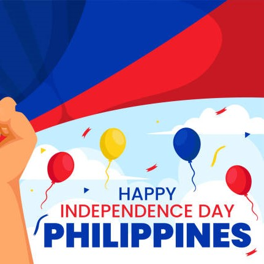
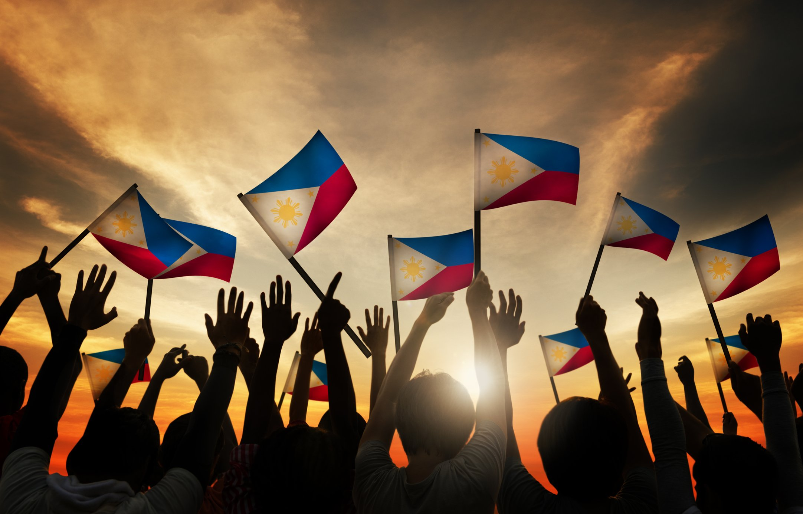

Date : June 12, 1898
|  |
Brief Description Philippine Independence Day is celebrated to commemorate the country’s declaration of independence from Spanish colonial rule in 1898. The day is a significant symbol of national pride and unity, honoring the sacrifices made by Filipino heroes and the collective struggle for freedom. |
|
Brief History
The annual June 12 observance of Philippine’s Independence Day came into effect after past
President Diosdado Macapagal signed the Republic Act No. 4166 regarding this matter on August 4, 1964.
This Act legalized the holiday, which is based on the Declaration of Independence on June 12, 1898 by
General Emilio Aguinaldo and Filipino revolutionary forces from the Spanish colonization. The Philippines’ flag
was raised and its national anthem was played for the first time in 1898. However,
liberty was short-lived because Spain and the United States did not recognize the declaration. |
 |
|
References |
Check Out More Philippine Holidays |